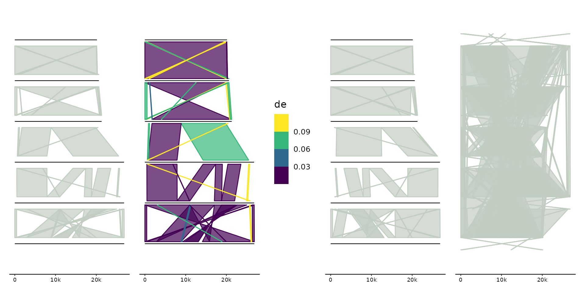
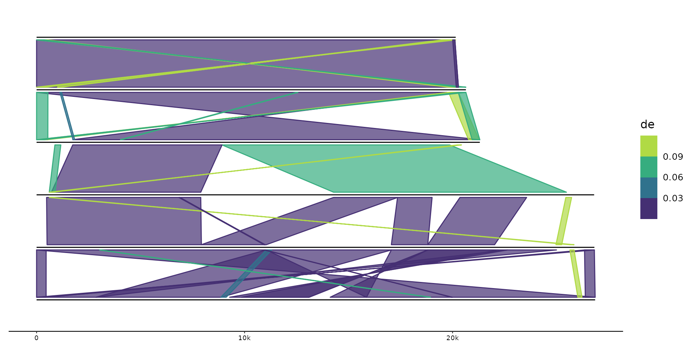

Draws connections between genomes, such as genome/gene/protein
alignments and gene/protein clusters. geom_link() draws links as filled
polygons, geom_link_line() draws a single connecting line.
Note that by default only links between adjacent genomes are computed and
shown. To compute and show all links between all genomes, set
gggenomes(..., adjacent_only=FALSE).
geom_link(
mapping = NULL,
data = links(),
stat = "identity",
position = "identity",
na.rm = FALSE,
show.legend = NA,
inherit.aes = TRUE,
offset = 0.15,
...
)
geom_link_line(
mapping = NULL,
data = links(),
stat = "identity",
position = "identity",
na.rm = FALSE,
show.legend = NA,
inherit.aes = TRUE,
...
)distance between seq center and link start. Use two values
c(<offset_top>, <offset_bottom>) for different top and bottom offsets
The function calls upon the data stored within the link track.
Data frames added to this track have seq_id and seq_id2 as required
variables. Optional and recommended variables include start, start2,
end, end2, bin_id, bin_id2 and strand.
Note, when start/end is not specified, links will be created between the
entire contigs of seq_id and seq_id2.
p0 <- gggenomes(seqs=emale_seqs, links = emale_ava) + geom_seq()
# default links
p1 <- p0 + geom_link()
# change offset from seqs and color
p2 <- p0 + geom_link(aes(fill=de, color=de), offset = 0.05) +
scale_fill_viridis_b() + scale_colour_viridis_b()
# combine with flip
p3 <- p0 |> flip(3,4,5) +
geom_link()
# compute & show all links among all genomes
# usually not useful and not recommended for large dataset
p4 <- gggenomes(links=emale_ava, adjacent_only = FALSE) + geom_link()
#> No seqs or feats provided, inferring seqs from links
library(patchwork) # combine plots in one figure
p1 + p2 + p3 + p4 + plot_layout(nrow=1)

q0 <- gggenomes(emale_genes, emale_seqs) |>
add_clusters(emale_cogs) +
geom_seq() + geom_gene()
#> Joining with `by = join_by(feat_id)`
# link gene clusters with polygon
q1 <- q0 + geom_link(aes(fill=cluster_id))
# link gene clusters with lines
q2 <- q0 + geom_link_line(aes(color=cluster_id))
q1 + q2 + plot_layout(nrow=1, guides = "collect")
